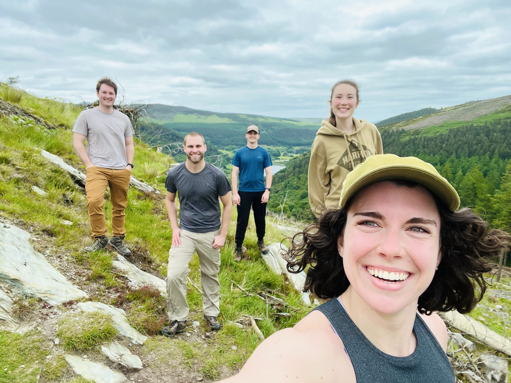
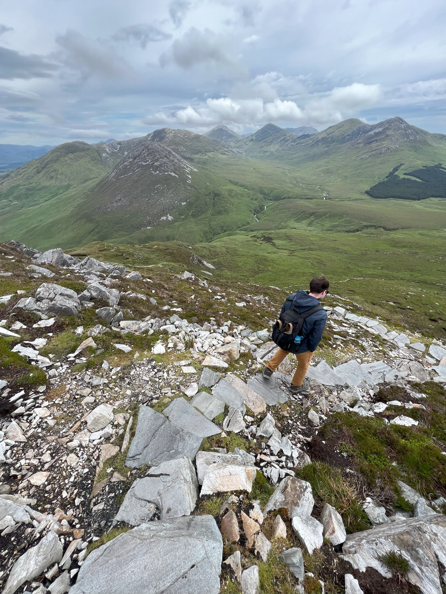

Glacier National Park
Bear! I could bear-ly contain my excitment during my trek when we stumbled acrossed a mama bear and her cub. My dad, immedate with concern, was later proud that my first instinct wasn't too run, but to pull my camera out and shoot. It was overall, a frightening expierence. Being pushed back a half mile by a bear, and then it disappearing into the woods without a trace is majestic and horrifying. How do those lumbering and large beasts remain so gentle and quiet?

Glendalough National Park
Smiles are bright and energy level is high. We have just hiked two miles, mostly uphill. We are feeling very strong and the rolling valleys of Glendalough National Park have us in good spirits. We have yet to discover this hike is 11 miles in total
Connemara National Park
The long descent begins. Not only towards the end of the hike, but towards the end of the trip. This last image in is the final in my series of photographs taken during Summer 2022. I was fortunate enough to have gone to three national parks. A trip to Glacier National Park and a trip to Irelend which brought me to two national parks there. Having my camera strapped to me constantly, I was able to take these photos and more.
